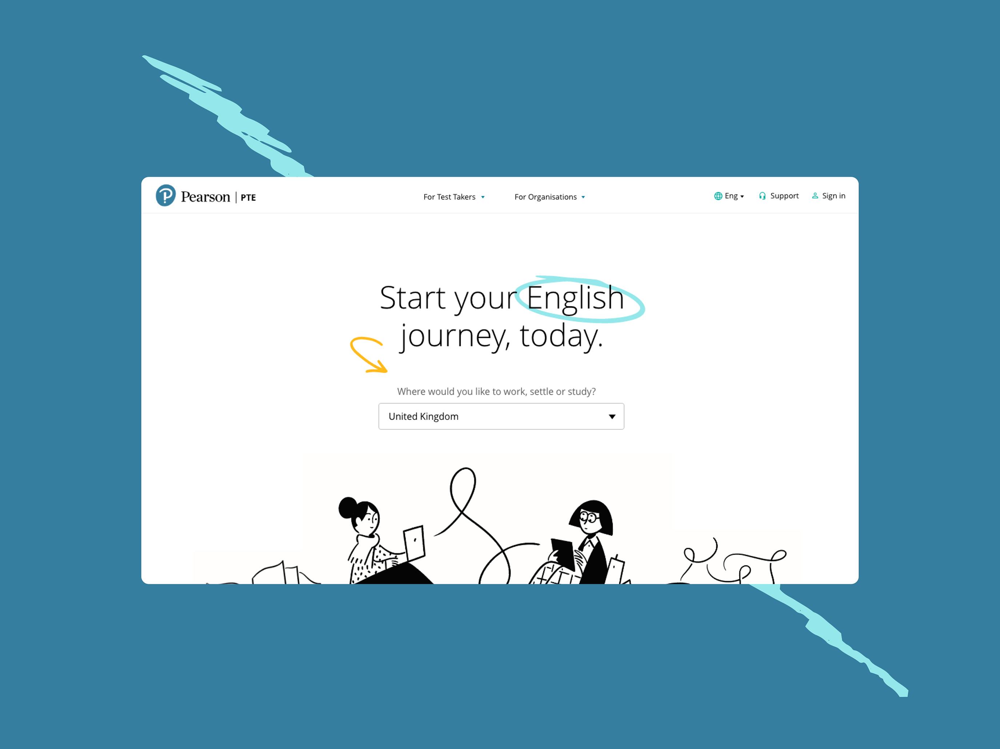
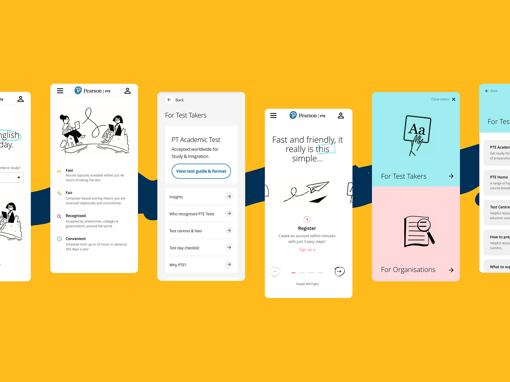
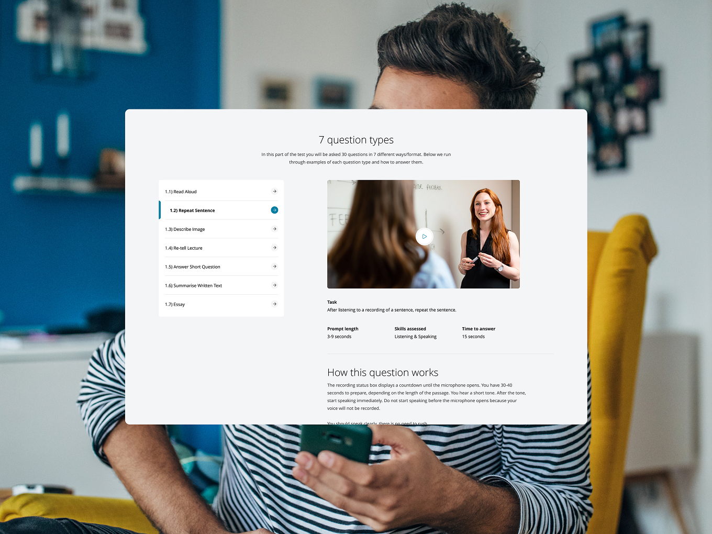
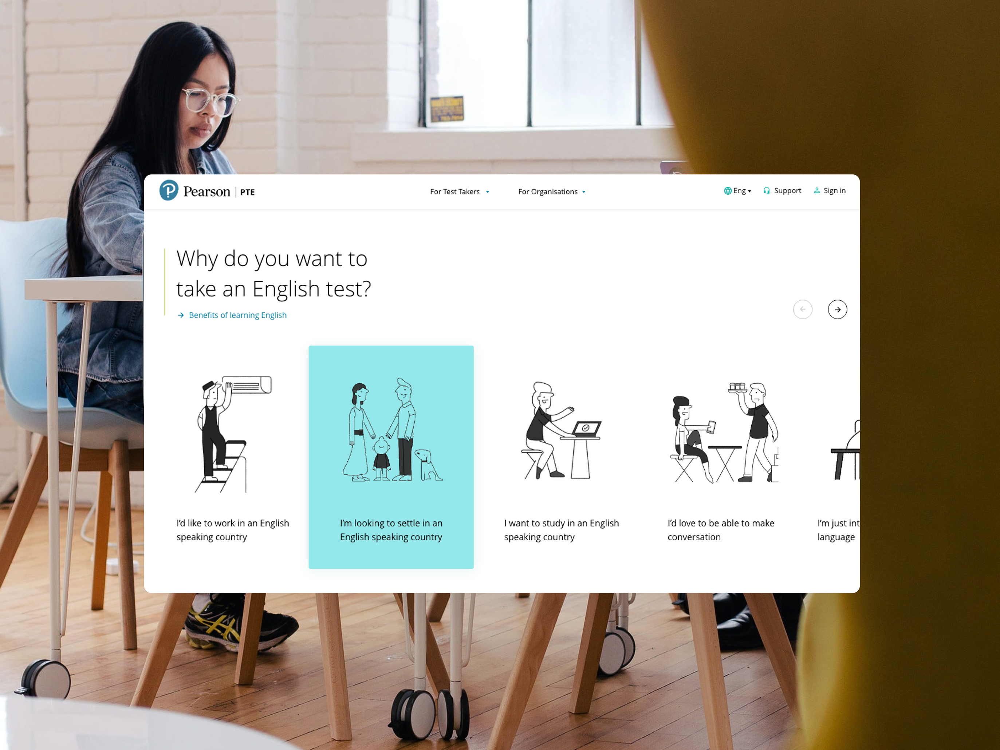
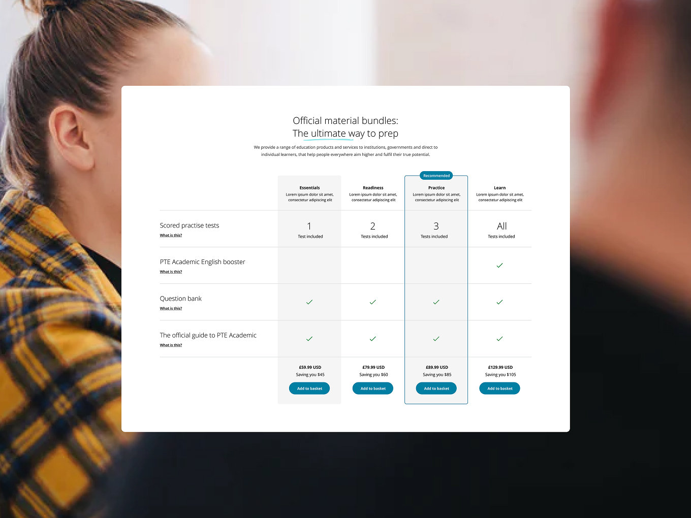
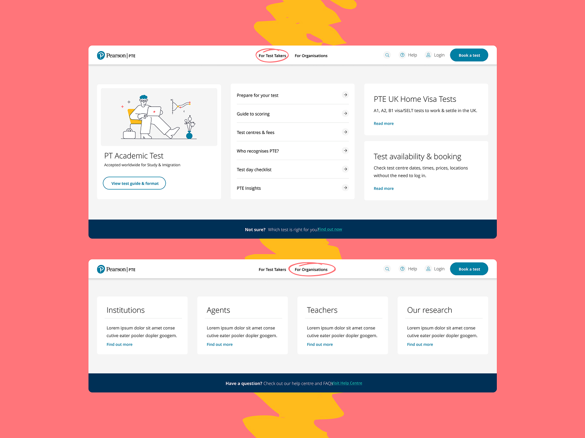
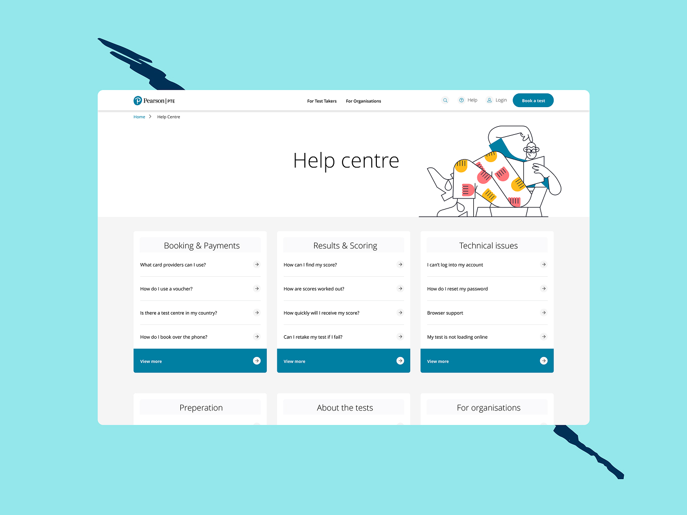
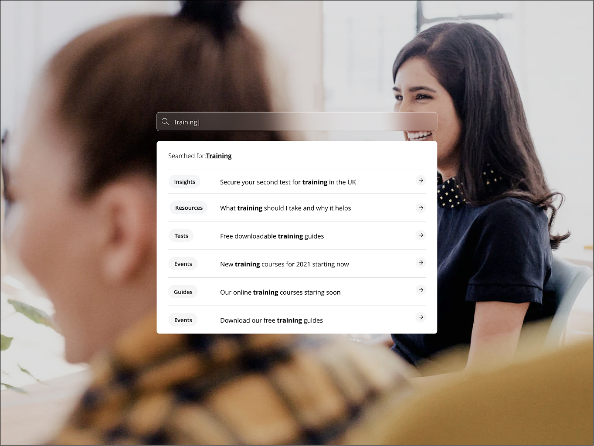

Pearson PTE
Plain English for an English Test
Pearson's PTE Academic is one of the biggest English-language testing services in the world, used by people applying to study, work, or migrate abroad. Both Pearson's own team and the people using the site agreed on one thing: the brand felt inconsistent, corporate, and forgettable. I led the design direction on a full rebuild, from brand research through to a tested, scalable system, built to work for an audience with almost nothing in common except the test they were taking.
Results
- 23 inconsistent legacy templates consolidated into 9 reusable component categories
- Brand perception shifted from “inconsistent and corporate” to distinct and human
- Strongest flows prototyped and user-tested before final delivery
- System built to scale across every regional market

The Challenge
Internal feedback described the existing brand as confusing and lacking consistency. External feedback landed in almost the same place: inconsistent, formal, uninspiring. Underneath that was a site with around 23 different page templates that all followed the same hero-plus-components pattern, so nothing felt distinct from anything else. Meanwhile the actual audience was enormous and varied: a software consultant applying for UK settlement, a nurse in the Philippines proving language proficiency for registration, a student in Vietnam with almost no English trying to study in the US. One brand, wildly different people, and a site that wasn't speaking to any of them specifically.


The Approach
Discovery started with an audit of the existing template and component library, and real personas rather than broad segments, migrants, students, and workers split further by market and scenario, from a software consultant chasing UK settlement to a nurse in the Philippines proving language proficiency for registration.
To define the tone I ran a scored competitor teardown, IELTS came out at 2 out of 10 on brand (intimidating, corporate, dated), against aspirational comparisons like Duolingo, Skillshare, Teachable, and Uber, benchmarking logo, voice, photography, and colour to see what education could borrow from other categories entirely. That research fed three genuinely different brand directions, one illustration and wordmark led, one built around bold colour and 3D characters, one led by authentic photography, put in front of stakeholders to align on together rather than defend a single option, with the shortlisted palette pushed through WCAG AA contrast testing early so nothing that looked good on a moodboard but failed in practice made it through.
Once a direction was agreed, it became a proper system, nine component categories and reusable templates across every major page type, built so regional teams could assemble new pages without breaking it.

The Outcome
What shipped was a distinct, considerably more human brand than the one Pearson started with, moving away from a generic corporate feel toward something that could actually speak to a global, wildly diverse audience without losing consistency. The strongest flows were prototyped and tested with real users before final delivery, and the system was built to scale, giving regional teams a library to build from rather than a static one-off homepage.


Reflection
Plenty of the people using this site had very little English, on a website for an English test. So the writing itself had to be simple enough for them to follow, or the brand had failed before they even booked the test. It's why I now think of accessibility less as a checklist, more as one question: can the weakest reader in the room actually follow this.

